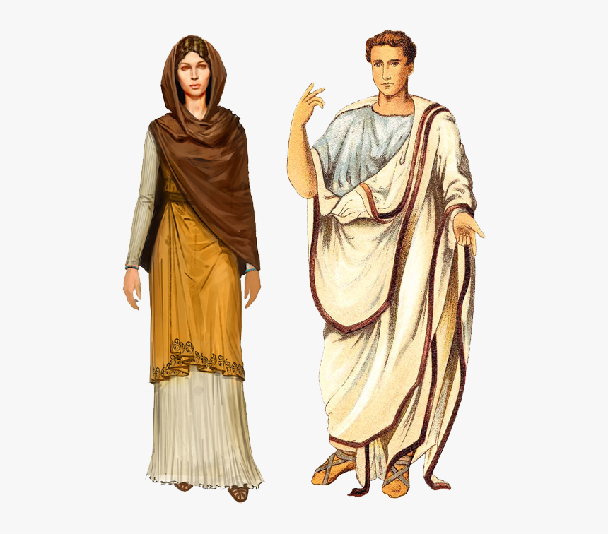

Tourist Attractions
Rome is full of many attractions, places and sotes to visit. Some of the most popular ones are listed below.
The Vatican Museums
The Vatican Museums are the public art and sculpture museums in the Vatican City. They display works from the immense collection amassed by the Catholic Church and the papacy throughout the centuries including several of the most renowned Roman sculptures and most important masterpieces of Renaissance art in the world. The museums contain roughly 70,000 works, of which 20,000 are on display, and currently employ 640 people who work in 40 different administrative, scholarly, and restoration departments.

The Trevi Fountain
The Trevi Fountain is a fountain in the Trevi district in Rome, Italy, designed by Italian architect Nicola Salvi and completed by Giuseppe Pannini and several others. Standing 26.3 metres high and 49.15 metres wide, it is the largest Baroque fountain in the city and one of the most famous fountains in the world.

The Villa Borghese Gardens
Villa Borghese is a landscape garden in Rome, containing a number of buildings, museums and attractions. It is the third largest public park in Rome after the ones of the Villa Doria Pamphili and Villa Ada. The gardens were developed for the Villa Borghese Pinciana, built by the architect Flaminio Ponzio, developing sketches by Scipione Borghese, who used it as a villa suburbana, or party villa, at the edge of Rome, and to house his art collection. The gardens as they are now were remade in the late 18th century.

The Giardina Giappanese
apanese gardens are traditional gardens whose designs are accompanied by Japanese aesthetics and philosophical ideas, avoid artificial ornamentation, and highlight the natural landscape. Plants and worn, aged materials are generally used by Japanese garden designers to suggest an ancient and faraway natural landscape, and to express the fragility of existence as well as time's unstoppable advance. Ancient Japanese art inspired past garden designers.

Fashion In Rome
Fashion in Rome has drastically changed throghtout the years . In Ancient Rome their day to day clothes were made from short or garments with sleeves,knee length tunic for men and boys.Women wore sleeved ,longer tunic. In today's generation clothing is modernised. They wear various clothes ranging from jeans,jackets,skirts and shirts.Women are not restricted to wear tunics like in the ancient times. The images below shows people used to dress and how they dress today. 
Lifestyle In Rome
Lifestyle in Rome is made for people who appreaciate living. They will enjoy the wonderful prestgious they can go for shopping. They can ejNoy the different cuisines in top notch resturants. They will also get a chance to visit many museums, parks and resturants as Rome is full of them.